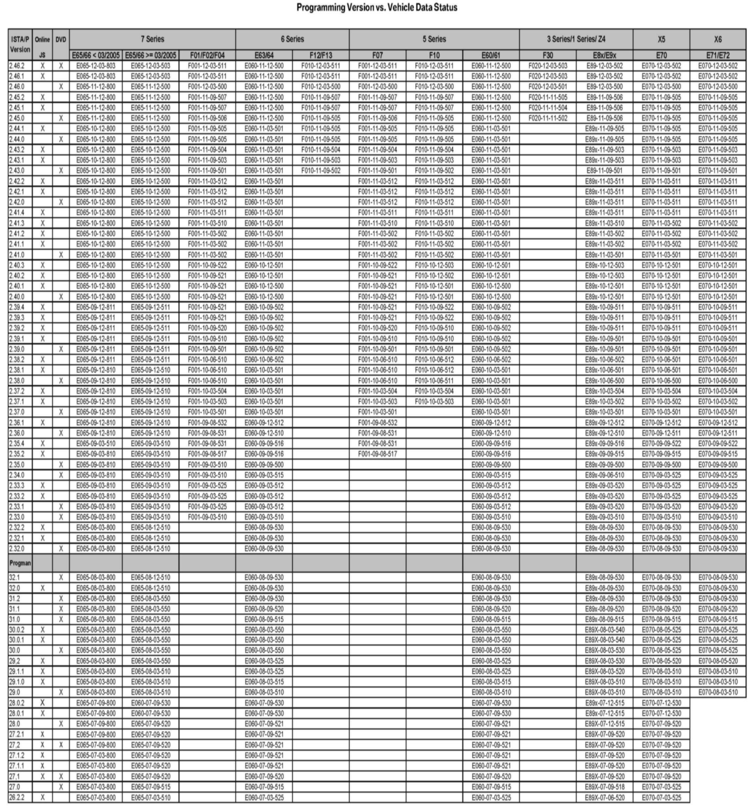
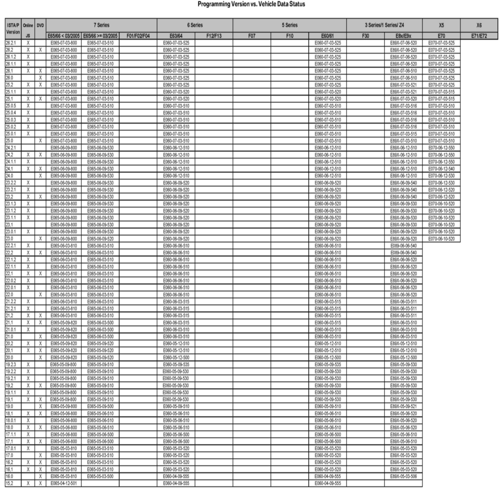

Computers, Controls - Programming VS Veh. Data Status
SI B09 07 07Programming/Coding Explanations
March 2012
Technical Service
This Service Information bulletin supersedes SI B09 07 07 dated February 2012.
Changes only affect the attachment.
[NEW] designates changes to this revision
SUBJECT
Programming Version Vehicle Data Status
MODEL All
SITUATION
All affected vehicles have a Vehicle Data Status stored in the vehicle, e.g., E065-07-09-500. This Vehicle Data Status describes the current configuration of the vehicle, and is used for programming by ISTA/P.
INFORMATION
To compare the Vehicle Data Status against with the ISTA/P version, refer to the [NEW] attachment or the 3g Technology website on Centernet. For future ISTA/P releases, the attachment will only be posted on the 3g Technology website in Centernet.
ATTACHMENTS


B090707_BMW_ISTAP_ILevel_Overview.